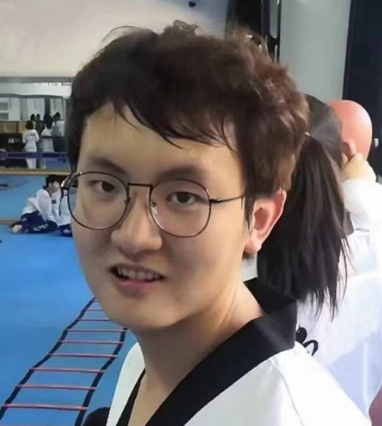

Hantao Zhang (张翰韬)
I am a PhD student in the CVLab at EPFL, under the supervision of Prof. Pascal Fua.
Previously, I obtained my Master's degree from University of Science and Technology of China (USTC).
My current research focuses on AI for Science, including areas like aerodynamic design and medical image processing. I am developing Constraint-Compliant Controllable Models to optimize solutions in these scientific domains. If you share an interest in scientific fields such as physics, computational fluid dynamics, or other related areas, please feel free to contact me at firstname.lastname@epfl.ch
|

|
Selected Awards and Honors
Outstanding Graduate of Anhui Province, 2025 (Highest Honor for Graduates)
Outstanding Graduate, University of Science and Technology of China, 2025
Excellence in Talent International Scholarship, 2024 (One of only four recipients)
USTC-Suzhou Industrial Park Scholarship, 2024
GDC scholarship, 2023 (Award-winning Student Representative)
1st-Class Scholarship, USTC * 3, 2022-2024
Excellent Graduation Thesis, 2022
National scholarship (Highest level scholarship for undergraduates) * 2, 2019-2020
Outstanding Student * 3, 2019-2022
|
|
{kind=link}